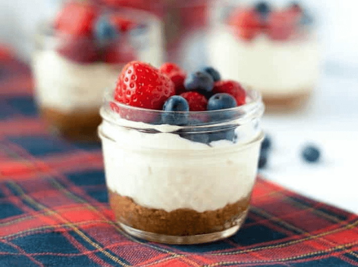

Keto Cheesecake (V)
(20 Min., 8 Port.)

Zutaten
Für den Boden
- 200 g gemahlene Mandeln, 75 g Butter, 45 g Erythrit, Prise Salz
Für die Füllung
- 500 g Frischkäse, 50 g Erythrit, 1 EL Vanilla-Extrakt (optional), 80 g Schlagsahne
Für die Fruchtschicht:
- Erdbeeren oder Himbeeren
Zubereitung - Boden
- Gemahlene Mandeln in eine Pfanne geben. Butter und Erythrit hinzufügen. Die Mischung auf mittlerer Hitze anbraten bis eine goldbraune Farbe entsteht.
- Die Mischung ein paar Momente abkühlen lassen. Anschließend die Masse auf Einmachgläser verteilen und mit einem Löffel auf den Boden drücken.
Zubereitung - Füllung
- Frischkäse in einer großen Schüssel mit Erythrit, Vanilla-Extrakt und Schlagsahne kombinieren. Alles gut vermischen bis eine homogene Masse entsteht.
- Die Füllung auf die Einmachgläser verteilen. Die Erdbeeren bzw. die Himbeeren in einem Mixer zu einer flüssigen Masse vermischen. Die Masse auf die Käseschicht gießen.
- Die Einmachbecher für ein paar Stunden (am besten über Nacht) in den Kühlschrank stellen.
Originalrezept unter: TPH Desserts